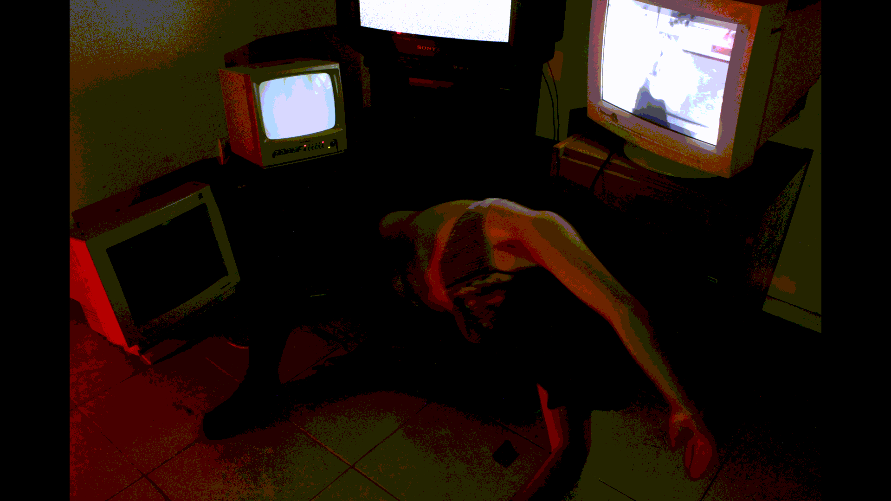
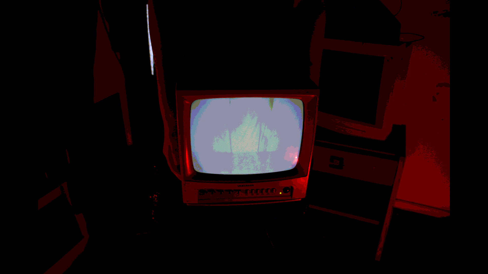

¿Qué podemos ver, qué podemos consumir?



No es ninguna casualidad, que se vea una vuelta a los valores conservadores (O incluso en un fenómeno muy extraño; una tendencia a un homogéneo en lo estético). Pero, ¿lo vemos donde? ¿Y en base a que se cree que está bien replicarlos? de las redes principalmente. Cultura del internet que se reflejan en la realidad, en medida que el estado tiene la necesidad de volver a lo conservador para castigar se nos permiten actitudes antes que en su momento de “avance” directamente dan cabida a un baneo/censura y ahora obstaculizando otras expresiones (Podemos decir Tranny sin miedo a un ban, pero no cisgender. por ejemplo). Podemos postear sin miedo escenas de violencia explícita hacia otros cuerpos, pero no cuerpos desnudos en muchos casos. Podemos agredir, se nos permite agredir virtualmente a otras identidades virtuales, lo que nos antagoniza de una parte de la población a la otra en orden de impulsar ciertos ideales que le sirven a una agenda. Y incluso la respuesta, o resistencia a través de las redes le sirve a la misma agenda. ya que está filtrada por lo correcto y lo permitido, lo legal y lo performativo.